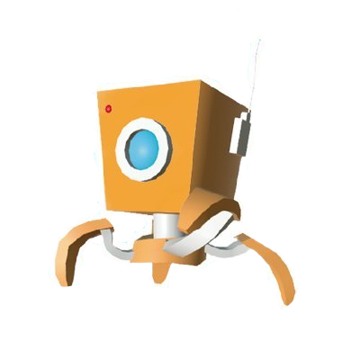
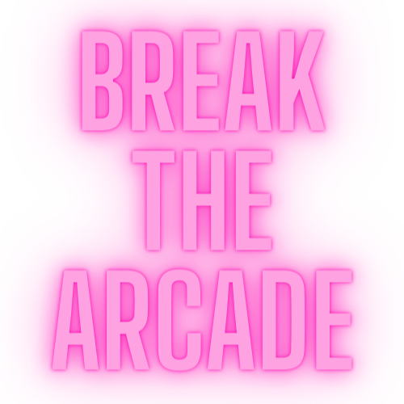
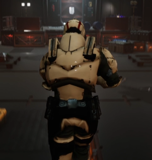

Since I was a child I have been surrounded by technology, especially computers, consoles and video games. That made me develop for years an interest in the way in which video games were created. To the point of wanting to study the design and development of these.
As I grew up I saw my idyllic profession clearer by the time I finished high school, I studied a higher grade training cycle in multiplatform applications with a video game profile. And when I finished I started a university degree in Interactive Digital Contents which I'm about to finish.
During my career, I have learned a lot, but it has also helped me to choose my destiny in this industry. And that's why I want to specialize in visual effects and become a Technical Artist professional.
However, I love to learn and improve my skills continuously.
GAME & VFX DESIGNER
..and particle padawan.
Game DesignVFXScripting
Through Kippy's Eye is a puzzle platformer centered around Kippy, a robot capable of transforming into
objects. Take over various objects with different properties, explore intricate levels and solve intriguing
puzzles!
Take on an adventure through a beautiful and relaxing low poly world and help Kippy get home!
Download: Itch.io
Game DesignVFXScripting
Welcome to the 2D platformer & bullet hell game inspired on arcade games!
On Break The Arcade you will find some arcade game references while you overcome different types of enemies
and lots of bullets! However, you won't have any bullets to shoot unless you absorb them!
Play clever, think how you will manage your bullets and don't waste them!
Download: Itch.io
Scripting
Here we can see a short game reel introducing shooter mechanics and a simple hud.
The purpose of this project was to familiarize with Unreal Engine and it's features.
Existing assets have been used for this project, however you can see the implementation of motion, visual
effects and programming.
Video link: Youtube
